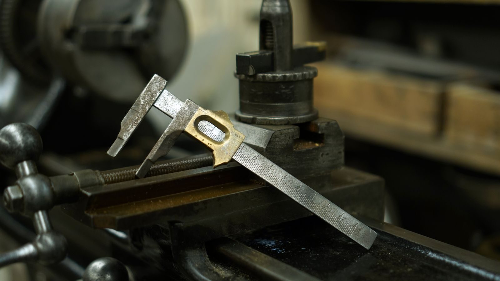
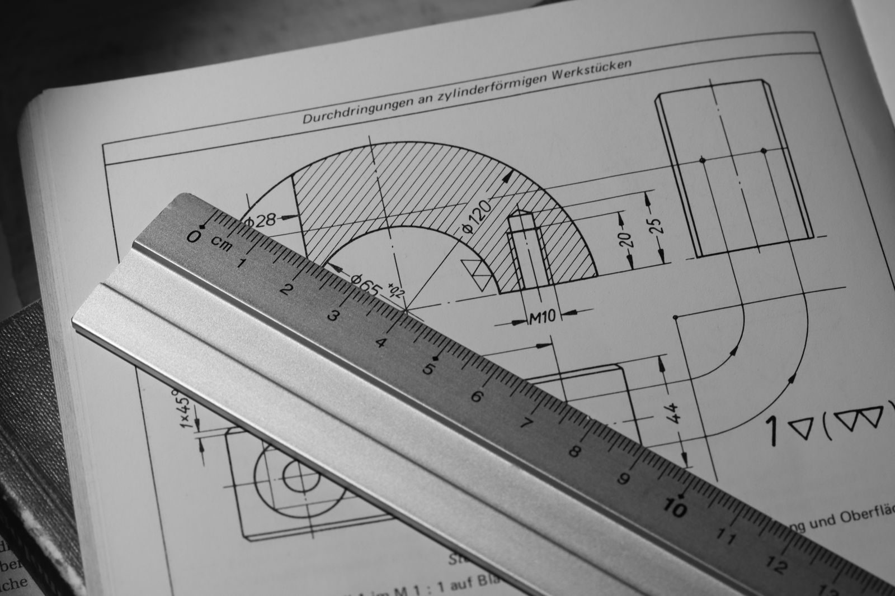
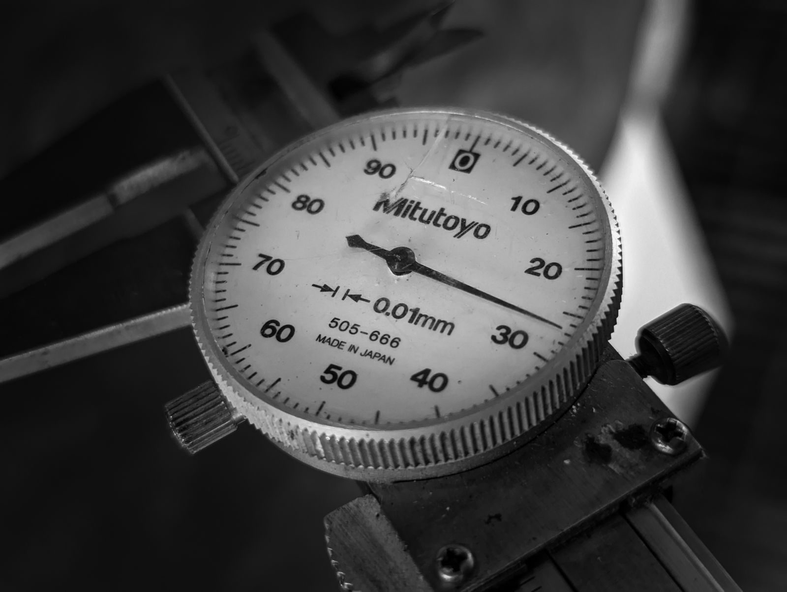

Tolerance costs money non-linearly
Achieving a dimension is cheap at a loose tolerance and gets steadily more expensive as the band tightens, because tighter tolerance means slower feeds, more inspections and more scrap. The cost curve is not a straight line - it bends sharply at the tight end.
That curvature is why a blanket tightening of a drawing is so expensive. Moving the general tolerance from +/- 0.2 mm to +/- 0.05 mm does not raise the price by a fixed percentage; it moves every feature into a band that requires a different setup, a different cutter strategy and more measurement.

The block-tolerance trap
Putting one tight block tolerance on the whole drawing forces every feature to that standard, including the ones that do not matter. A cosmetic edge, a clearance hole and a bearing bore all become equally expensive.
The better habit is a loose general tolerance for the drawing plus explicit tight tolerances only on functional features. The general tolerance covers the features nobody will measure carefully; the explicit callouts tell the machinist where to spend time.
Ask what the feature has to do
A bearing bore, a sealing face or a locating pin hole earns a tight tolerance. A clearance hole, a non-critical length or a cosmetic edge usually does not. Writing down the functional reason for each tight call makes the drawing easier to manufacture and cheaper without losing anything.
This is worth doing literally: annotate the drawing with the function next to each tight dimension. It takes ten minutes and it prevents the machinist from having to guess which dimensions matter when a compromise is unavoidable.
Watch the stack
Tolerances accumulate. If three dimensions in a chain each sit at the edge of their band, the assembly can fail even though every part passed inspection. Sizing the stack-up before release is cheaper than fixing it after.
A quick worst-case sum is enough for most assemblies: add the tolerances in the chain and compare the total to the clearance available. Where the sum exceeds the clearance, tighten one dimension rather than three, and choose the one that is cheapest to hold.

What to put on the drawing
State a general tolerance in the title block, add explicit tolerances on functional features only, define the datums used for inspection, and note where a finish changes the dimension. That set of four things covers the majority of disputes that arise after a part is made.
Units and standard matter too. Mixing metric and imperial dimensions, or quoting a tolerance without saying whether it applies before or after plating, creates ambiguity that turns into a remake.
What each process can actually hold
Tolerance bands map to processes more predictably than most drawings assume. General CNC milling holds about +/- 0.10 mm without special effort, and about +/- 0.05 mm once the setup is dialled in and the cutter path is planned for it. Turning holds tighter more easily because the part rotates against a fixed tool: +/- 0.05 mm is routine and +/- 0.025 mm is achievable. Below about +/- 0.01 mm you are into grinding, honing or lapping, where the machine, the temperature and the inspection all change.
The practical value of this ladder is that it lets you choose the process from the tolerance, or the tolerance from the process, in that order. Specifying +/- 0.01 mm on a milled face does not make it accurate - it makes it expensive and slow, because the shop has to move it to a grinder and then prove it on a coordinate measuring machine. Writing the tolerance the chosen process can hold without heroics is the cheapest precision available.

Plus/minus is a poor fit for position
Plus/minus tolerancing describes two coordinates independently, which silently defines a rectangular tolerance zone. A hole that must sit inside a circular zone around its true position is better described with a position tolerance, because the rectangular zone is simultaneously too generous on the diagonals and too strict on the axes.
The usual trap appears with a bolt pattern. Two plus/minus dimensions per hole give a square zone whose corners permit a hole that the mating part cannot accept, so assemblies fail even though every dimension was in tolerance. Switching those callouts to a position tolerance with a defined datum reference makes the zone circular and the assembly behaviour predictable - and usually lets the tolerance value grow, which lowers cost.
Datum choice drives the whole drawing
A datum is a reference the inspector can reproduce. Choose datums that exist physically on the part and that reflect how it is located in the assembly: a machined face, a bore, a pair of holes. Once the datum reference frame is fixed, every position and profile callout on the drawing becomes measurable, and the shop and the inspector are working from the same origin.
Drawings that omit datums, or that imply several, are the ones that generate arguments at first article inspection. Machining the part to a self-consistent internal reference that is not the drawing datum produces parts that fit the machine and not the assembly. Fixing datums at design time costs minutes; fixing them after the first batch costs a remake.
Tolerance, inspection and cost travel together
Every tightening has an inspection consequence, and the inspection is often the larger cost. General tolerances are checked with a caliper or a micrometer in seconds. A +/- 0.02 mm bore may need a bore gauge, a controlled temperature and a repeatable measurement routine. A geometric position callout on a pattern needs a CMM, a fixture and a program.
That is why a single tight callout on an otherwise loose drawing is cheap, and the same callout repeated across twenty features is not. The cost is not the metal removed - it is the measurement time, the setup adjustment and the scrap that a band too narrow for the process will inevitably produce. Budget tolerance where the function needs it, and budget the inspection with it.
Reading a tolerance stack in practice
A quick worst-case stack is enough for most assemblies. Take the chain of dimensions between the two features that must mate, add the tolerances, and compare the total to the clearance available. If the sum exceeds the clearance, the assembly can fail even though each part passed its own inspection.
Worked example: a shaft spigot at 20.00 +/- 0.05 mm sits in a bore at 20.20 +/- 0.10 mm. Worst case, the smallest clearance is 20.20 - 0.10 - (20.00 + 0.05) = 0.05 mm, which is positive, so the assembly always fits. If the bore were specified at 20.10 +/- 0.10 mm, the worst case becomes an interference of 0.05 mm and the design fails at the tolerance limits. The arithmetic takes two minutes and prevents a batch-level rework.
Tolerances you should not tighten
Cosmetic edges, clearance holes, chamfers, fillet radii that carry no load, and any length that only sets the position of a non-critical feature rarely earn a tight band. Tightening them buys nothing functional and forces the shop to spend time on features that will never be measured in service.
The same applies to overall length on a part whose function is set by two internal features. Holding overall length tightly while the internal datum floats simply adds a dimension to control. The better habit is to tolerance the features that define function and leave the rest to the general tolerance block.
What a good tolerance block looks like
A practical drawing states a moderate general tolerance in the title block, applies explicit tight tolerances only to functional features, defines the datums, and notes where a coating or plating changes the final dimension. It also states the units and the standard, so that nobody has to infer whether a bare number is millimetres or inches.
Documenting the function next to each tight callout is the single highest-value habit. A note reading 'bore, press fit for bearing, +/- 0.02' tells the machinist what matters; a bare '+/- 0.02' on a drawing where twenty other features carry the same callout tells them nothing about where to spend time when a compromise is unavoidable.
When to convert a plus/minus into GD&T
The conversion is worth making whenever a feature's function is positional rather than dimensional. A bearing bore cares about its diameter and its location; a bolt hole cares about its position relative to its partners; a sealing face cares about flatness and profile. Each of those is a geometric control, and each is measured differently from a two-point size.
The practical trigger is a mating pair held together by more than one feature. As soon as two holes, two pins or two faces must line up simultaneously, position tolerancing describes the requirement better than independent plus/minus values, and it usually returns tolerance that the rectangular zone was wasting.
Two tolerances that quietly fight each other
Size and geometry are separate requirements and can conflict. A bore with a generous size tolerance still has to be round and straight enough to accept its shaft, and a shaft with a fine diameter tolerance still has to be straight enough to enter the bore. Where a bore is specified at 20.00 to 20.10 mm with no roundness control, an oval bore of the correct average size can pass the caliper and fail the assembly.
The fix is to state the envelope requirement explicitly, or to add a circularity or cylindricity control where the fit is critical. The alternative - discovering it as an assembly problem after the parts are made and finished - is the expensive way to learn that size and form are not the same thing.
Where these tolerance rules come from
The general-tolerance approach described here follows the convention set out in ISO 2768 for unspecified linear and angular dimensions, while the geometric callouts follow ASME Y14.5. Both are the documents an inspector actually works to, which is why naming them on a drawing settles arguments before they start. For how a measurement is traced back to a national standard, the US National Institute of Standards and Technology publishes the calibration chain that makes an inspection result meaningful.
Frequently asked
Is +/- 0.05 mm a reasonable general tolerance?
For most machined metals it is a practical general tolerance that does not add cost unnecessarily. Tightening it across a whole drawing is what raises the price, so keep the general callout moderate and spend tight tolerance only on the features that need it.
How do I decide which dimensions are critical?
Ask what happens if the dimension is wrong. If the part will not assemble, seal, rotate correctly or locate as intended, the dimension is functional and earns a tight callout. If a deviation is invisible in service, it does not.
Should tolerances be on the model or the drawing?
The drawing governs inspection, because a 3D model's nominal dimensions carry no tolerance information. Send both, and make sure the drawing states the datums so the machinist and the inspector are working from the same reference.